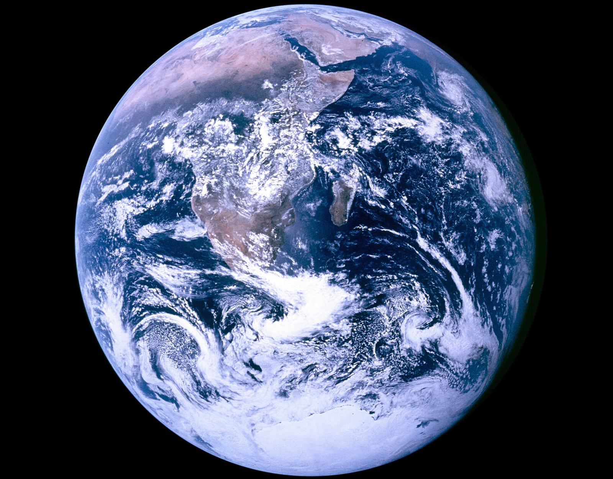

We add about 11 billion tonnes of carbon to the air each year, and only about half stays.
Burning fuel and clearing forest send carbon into the air. Yet the air keeps only about half of it. This page tracks where the rest goes, and what that means for the years ahead.

Four stores of carbon
Earth's carbon sits in four great stores, called spheres. Carbon moves between them all the time, but it is never used up.
- The atmosphere is the air. Most of its carbon is in carbon dioxide.
- The biosphere is all living things, plus the soil built from their remains.
- The hydrosphere is Earth's water. Most of it is ocean, with carbon dissolved in it.
- The geosphere is rock and sediment. It includes fossil fuels: coal, oil and gas.
| Sphere | Store | Billion tonnes of carbon |
|---|---|---|
| Atmosphere | Carbon dioxide in the air | 890 |
| Biosphere | Living plants | 450 |
| Biosphere | Soils | 1,700 |
| Biosphere | Frozen soils (permafrost) | 1,400 |
| Hydrosphere | Carbon dissolved in the ocean | 37,000 |
| Hydrosphere | Remains of dead ocean life | 700 |
| Hydrosphere | Living ocean life | 3 |
| Geosphere | Sediment on the sea floor | 1,750 |
| Geosphere | Coal reserves | 560 |
| Geosphere | Oil reserves | 230 |
| Geosphere | Gas reserves | 115 |
Source: Friedlingstein and others, 2025, Earth System Science Data 17: 965 to 1039 (the Global Carbon Budget 2024), Figure 2. Its stores come from the IPCC report of 2021. Rock such as limestone holds far more carbon, but the figure does not count it.
The air holds one of the smaller stores. So a change in its flows can change the air's carbon store quickly.
The old balance
Each year, land producers take about 130 billion tonnes of carbon out of the air by photosynthesis. Respiration by plants, animals and decomposers puts about the same amount back.
The ocean and the air swap about 80 billion tonnes each way. Carbon dioxide dissolves into the sea in some places and escapes from it in others.
These natural flows roughly balance. In 1750, before the industrial era, the air held about 278 parts per million of carbon dioxide.
Flows: Global Carbon Budget 2024, Figure 2. Table 2 in Lesson 2a-1 counted only what producers kept after their own respiration, so its numbers are smaller.
Open Tracking a Carbon Atom (opens in a new tab). Work through stages 3 to 5, from the urchin eating the kelp to the atom's return to the sea. Watch respiration send the carbon atom back out of the biosphere. Then come back and sort the processes below.
Sort each event by what it does to the carbon in the air.
The missing half
People now add carbon to the air on top of the natural flows. Scientists track every part of this extra carbon each year, in a carbon budget.
| Flow | Billion tonnes of carbon |
|---|---|
| Into the air: burning fossil fuels and making cement | 10.1 |
| Into the air: clearing and changing land | 1.0 |
| Total added | 11.1 |
| Out of the air: taken up by the ocean | 2.9 |
| Out of the air: taken up on land | 2.3 |
| Stayed in the air | 5.9 |
Source: Global Carbon Budget 2024, values for 2023. Scientists measure or estimate each line separately. In 2023 the lines add up to within 0.1.
So about half of the carbon people add stays in the air. The other half moves into the ocean and onto land. Carbon dioxide in the air averaged 419 parts per million in 2023, up from about 278 in 1750.
Where the other half goes
On land, plants now photosynthesise a little more than living things respire. The extra carbon builds up in wood and soil.
In the ocean, carbon dioxide dissolves into the water at the surface. Ocean producers, like the kelp in Lesson 2a-1, use some of it to build sugar.
Clearing forest works the other way. When trees burn or rot, the carbon in their wood returns to the air.
Fossil fuels formed from producers buried millions of years ago. Their carbon first entered those producers by photosynthesis. Burning the fuels returns that geosphere carbon to the air within moments.
Many students think photosynthesis removes carbon from the air for good. Respiration and decay return most of it. Only carbon locked in wood, soil, deep water or rock stays out of the air.
Model the air's carbon
This is a teaching model, not a forecast. It starts from the 2023 numbers in Table 2. The ocean and land take up more as the air holds more carbon above its 1750 level.
The slider sets emissions as a share of 2023's 11.1 billion tonnes. Every run lasts 40 years, from 2023 to 2063.
If we cut emissions in half, does the carbon dioxide in the air go down?
- Atmosphere
- Biosphere, and carbon taken up on land
- Hydrosphere, and carbon taken up by the ocean
- Geosphere: fossil fuels
- Carbon people add: fossil fuels and clearing land
- Thin arrows: natural flows that balance (130 and 80)
- CO₂ in the air (faint lines: your last two runs)
- Dashed line: the 1750 level, 278 ppm
- Leave the slider at 100% and let the run reach 2063. Look for: the line climbs, while the green and blue arrows slowly widen. Press Record.
- Move the slider to 50%. Look for: whether the line climbs, falls or stays level. Press Record in 2063.
- Move the slider to 0%. Look for: what the ocean and land do once nothing is added. Press Record in 2063.
- Try 40%, then 50% again. Look for: the setting that keeps the line closest to level.
Use your evidence
Scientists warn that the ocean and land may not keep taking up more carbon as the climate warms. This model leaves that out, so treat its later years with care.
Many students think a cut in emissions makes carbon dioxide in the air fall. A cut slows the rise. The air's store falls only when less carbon flows in than flows out.
Carbon moves among four spheres and is never used up. Photosynthesis moves it out of the air, while respiration and burning put it back. The air's store grows whenever more flows in than out.
Develop a model
Draw your model on paper first. Then write the explanation below, using numbers from Table 2 or your recorded rows.
Prompt: Draw the four spheres as boxes. Add labelled arrows for photosynthesis, respiration, burning fossil fuels and dissolving into the ocean. Then use data to explain why the air's carbon store is growing.
- Spheres (1 mark): Your model labels the atmosphere, biosphere, hydrosphere and geosphere.
- Life processes (1 mark): A photosynthesis arrow runs from the atmosphere to the biosphere, and a respiration arrow runs back.
- Other flows (1 mark): A burning arrow runs from the geosphere to the atmosphere. A dissolving arrow runs from the atmosphere to the hydrosphere.
- Explanation with data (1 mark): You show that more flows in than out, such as 11.1 added against 5.2 taken up, so 5.9 stays.